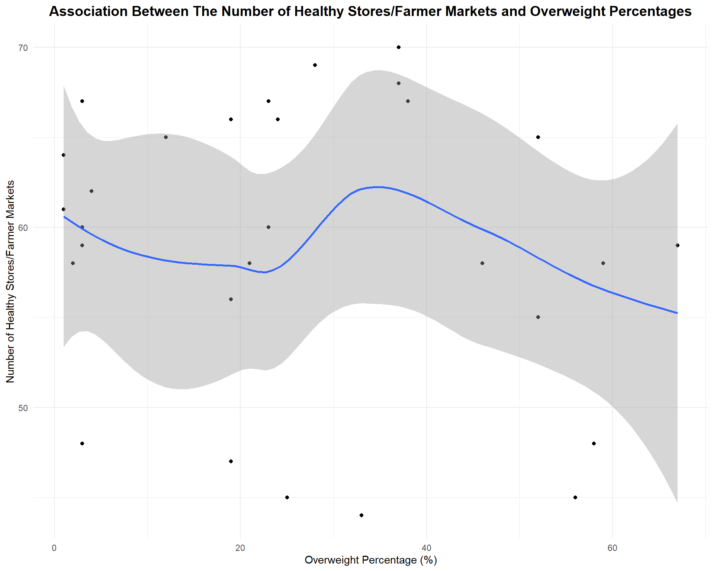

# load "stores" dataset and cleaning up:
stores = read.csv("./data/Recognized_Shop_Healthy_Stores_20241116.csv") |>
janitor::clean_names() |>
mutate(borough = case_when(
borough == "New York" ~ "Manhattan",
TRUE ~ borough
)) |>
rename(year = year_awarded, healthy_store_market = store_name) |>
distinct(latitude, longitude,.keep_all = TRUE) |>
select (healthy_store_market, borough, year)
# load "farmer markets" data and cleaning up:
farmer_market = read.csv("./data/farmers_market_data.csv") |>
janitor::clean_names() |>
distinct(latitude, longitude,.keep_all = TRUE) |>
select(farmers_market, borough, year) |>
rename(healthy_store_market = farmers_market)
# bind the "stores" and "farmer_marke":
stores_farmer_market = rbind(stores, farmer_market)
# load overweight data:
overweight = read.csv("./data/Overweight by boroughs.csv") |>
separate (Percent, into = c("percent", "low_confidence", "highconfidence"))|>
mutate(percent = as.numeric(percent)) |>
janitor::clean_names() |>
rename (borough = geography, year = time_period, overweight_percentage = percent) |>
select(overweight_percentage, borough, year)
# calculate the number store/market in each borough in each year:
counts = stores_farmer_market |>
drop_na() |>
group_by(year, borough) |>
summarise(count = n(), .groups = "drop")
## join healthy store/market and overweight together
store_market_overweight = full_join (counts, overweight, by = join_by(year, borough)) |>
mutate(year = as.factor(year))
# Plot: Number of Healthy Stores/Farmer Markets and Overweight Percentages
store_market_overweight |>
na.omit() |>
ggplot(aes(x = count, y = overweight_percentage)) +
geom_point() +
geom_smooth(method = loess) +
labs(
title = "Association Between The Number of Healthy Stores/Farmer Markets and Overweight Percentages",
x = "Overweight Percentage (%)",
y = "Number of Healthy Stores/Farmer Markets"
) +
theme_minimal()+
theme(plot.title=element_text(size=14, face="bold")) +
theme(plot.title = element_text(hjust = 0.5)) 1. The plot suggests a negative association between the overweight percentage and the number of healthy stores or farmer markets. Regions with a higher overweight percentage tend to have fewer healthy stores or farmer markets on average.
2. The wide confidence band indicates higher variability in the trend.
model = lm(overweight_percentage ~ count, data = store_market_overweight)
summary(model) |>
broom::tidy() |>
knitr::kable(caption = "Association Between The Number of Healthy Stores/Farmer Markets and Overweight Percentages")| term | estimate | std.error | statistic | p.value |
|---|---|---|---|---|
| (Intercept) | 60.1167336 | 2.3803062 | 25.2558827 | 0.0000000 |
| count | -0.0499049 | 0.0690072 | -0.7231828 | 0.4753605 |
1.While the coefficient for count (-0.05) suggests a slight negative relationship between the number of healthy stores/farmer markets and overweight percentages, the relationship is weak and not statistically significant.
2.The large p-value (0.475) indicates that the variability in the data may overshadow the effect of healthy store availability on overweight prevalence.
3.Other factors may play a more significant role in explaining the variation in overweight percentages.